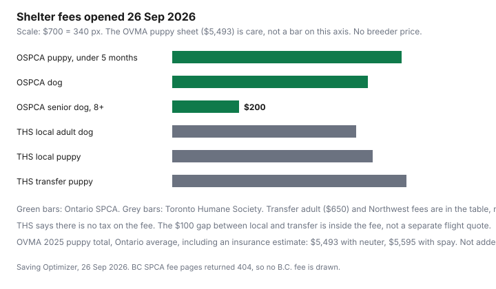

Pets · Canada
Adoption vs Breeder in Canada: The True First-Year Cost Comparison
The fee on the adoption page and the price a breeder quotes are the first cheques, not the first year. This page puts dated shelter fees beside the Ontario Veterinary Medical Association’s 2025 canine cost sheet, and it stops where a number was not opened. No breeder price range is printed, because none was on a page opened on 26 Sep 2026. The tone is the same for both paths: ask what is included, then fund the care that is not. This is household arithmetic. It is not veterinary advice and not a recommendation to adopt or to buy.
Disclosure: There is no affiliate offer on this page. Saving Optimizer does not claim a partnership with a shelter, a breeder, a trainer, or an insurer. Education only. Confirm medical care with a veterinarian. Confirm a contract with the person who will sign it.
Key takeaways
- Ontario SPCA, opened 26 Sep 2026: puppy under 5 months $685, dog $585, senior dog 8 years and older $200. Northwest Animal Centre fees on the same page are lower, with different age cuts. Toronto Humane Society: local adult dog $550, transfer adult $650, local puppy $600, transfer puppy $700, no tax on the fee.
- BC SPCA fee URLs returned 404 on 26 Sep 2026, so no British Columbia fee is printed.
- OVMA’s 2025 canine sheet prints a puppy year of $5,493 with neuter or $5,595 with spay, and an adult dog year of $5,118. Those are Ontario provincial averages, including an insurance estimate. They are not a quote.
- A shelter inclusion (spay or neuter, vaccines, microchip, a month of food) overlaps some OVMA lines. Adding the full sheet on top of the fee overstates the cash if you will not buy those lines again.
- Canadian Anti-Fraud Centre: pet frauds often start as a low or free animal, then a string of payments for shipping, vaccines, certificates, or insurance, and no animal arrives. No loss total was on the CAFC page opened here.
Adoption fees and what they include
Read the fee and the inclusion list as one document. Ontario SPCA and Humane Society, adoption process and fees page, opened 26 Sep 2026, lists a puppy under 5 months at $685, a dog at $585, and a senior dog (8 years and older) at $200. The Northwest Animal Centre block on the same page lists a puppy under 6 months at $500, a dog at $450, and a senior dog (7 years and older) at $200. The age cut is not the same. Use the centre that would actually hand you the animal.
For dogs and puppies, that page says the fee includes spay or neuter, age-appropriate vaccines that are up to date, rabies vaccine for pets 3 months (12 weeks) or older, deworming, flea treatment, ear-mite treatment if needed, a nail trim if needed, a microchip and tag, an adoption folder, and post-adoption support. It also lists an adoption kit from Royal Canin with coupons and a one-month supply of food, not available at the Northwest Animal Centre, one free 24/7 online appointment with a licensed veterinarian through Vetster, an Adaptil diffuser, tick treatment, and a Pet Valu new-pet guide. The FAQ on the same page says cats and dogs go home with a first set of core vaccines and rabies, and that puppies and kittens may need as many as two boosters after adoption. It tells you to speak with your veterinarian and to bring the medical record. A booster that is still ahead of you is not “already paid forever.”
Toronto Humane Society’s adoption process page, opened 26 Sep 2026, lists adult dogs (local) at $550, adult dogs (transfer) at $650, puppies (local) at $600, and puppies (transfer) at $700. There is no tax on those fees. The page says some dogs were transferred from other organizations and may have a higher fee to help offset the cost of transferring them. That is a $100 gap on both the adult line and the puppy line, inside the fee, not a separate invoice this page found. The page describes the visit, the conversation, and the meet-and-greet. It does not, on the text opened here, itemize spay, vaccines, or a microchip the way the Ontario SPCA page does. Do not copy Ontario SPCA’s inclusion list onto a Toronto Humane Society receipt. Ask that shelter what the fee covers for the animal in front of you.
British Columbia SPCA fee addresses that search results still pointed at returned HTTP 404 on 26 Sep 2026. No dog or puppy fee from that society is used. If you are in B.C., open the current fee page yourself and write down what it includes before you compare it with Ontario.
Breeder prices and health testing
No breeder price list, kennel-club fee schedule, or health-test price was on a page opened for this draft. This section therefore has no dollar range. “Why do breeders charge so much?” is answered with the questions that change the cheque, not with a number this site invented.
Ask, in writing, what the price includes and what it does not. A contract that names the dam and the sire, the date of birth, and the date you may visit is a different document from a photo and a deposit address. Health testing is a list, not a vibe: which tests, which lab or registry, whether you may see the results before you pay the balance, and whether a failed test changes the price or the sale. Registration papers, a veterinary exam before you take the puppy home, a vaccine record, deworming, and a microchip are either in the price or they are costs you will meet in the first months. If the seller will not say which, you do not yet have a price. You have a sticker.
The OVMA sheet below is the care after the animal is yours. It does not include a purchase price. A higher breeder price that includes a spay or a set of tests can be less cash later, or it can be a story. You only know which when the inclusions are on the page you sign. Keep the first year in a sinking fund the way you would keep a tax bill: the expense is dated, even when the week it arrives is not.
Rescue imports: transport fees
A separate “import fee” or international transport tariff was not opened. The only dated transport offset on a page opened 26 Sep 2026 is inside Toronto Humane Society’s adoption table. A transfer adult dog is $650 and a local adult dog is $550. A transfer puppy is $700 and a local puppy is $600. The page says the higher fee helps offset the cost of transferring the animal to the shelter. That $100 is not a quote for a flight from another province, and it is not a customs fee. It is the difference those two rows print.
If a rescue outside that table asks for transport, vaccines, a crate, and insurance as extra payments before you have met the animal, stop and read the scam section. The Canadian Anti-Fraud Centre describes that pattern. Meeting the animal, or a named partner shelter, in person, with the fee paid to the organization named on its own site, is the opposite pattern. Ontario SPCA’s page says it does not hold animals for a later visit and does not keep waiting lists for a type of animal that is not there yet. A seller who will only ship, and will not let you see the animal first, is asking you to fund a story.
Hidden costs: training, vet catch-up
The shared baseline is the OVMA “Annual cost of owning a puppy / dog” sheet for 2025, opened 26 Sep 2026 from the association’s site. The sheet says the figures are an estimate, that insurance depends on the pet and the policy, and that the costs are a provincial average that may vary. Printed puppy lines include parasite prevention $189, exams with vaccines $642, deworming medication $91, fecal exams $131, microchip $137, and neuter or spay $1,016 or $1,118. Nutrition is food $866 and bowls $44. Essentials are collar and leash $55, bed $78, toys $83, and crate $178. Other expenses are obedience classes $555 and licence $25. The printed puppy total is $5,493 or $5,595. An insurance line of $1,402 is also printed on the sheet, with a note that it is an estimate. Do not add $1,402 on top of $5,493 unless your own reading of the PDF shows the total excludes it. The line items other than insurance, using the neuter figure, add to $4,090. $4,090 plus $1,402 is $5,492, one dollar off the printed $5,493. That dollar is a layout check, not a second cost.
The adult-dog half of the same sheet prints parasite prevention $238, exams with vaccines $214, heartworm and Lyme test $125, fecal exams $66, wellness blood work $174, professional dental care $1,320, food $1,418, collar $54, toys $82, licence $25, and pet insurance $1,402. The printed adult total is $5,118. Those adult lines do add to $5,118, so the insurance estimate is inside that adult total. Dental care and food are why an adult year on this sheet is not “cheaper than a puppy” in a simple way. The puppy total is a different mix, with surgery and training and without that dental line.
Training at $555 and a licence at $25 are on the puppy sheet, so they are not hidden on this page. What is easy to skip is the overlap. Ontario SPCA says spay or neuter, vaccines, deworming, a microchip, and (except at Northwest) a month of food are in the fee. If you subtract the whole OVMA exam line of $642 because “vaccines are included,” you may be subtracting a year of exams the shelter did not promise. The honest worksheet leaves the OVMA total visible, lists the shelter inclusions as categories, and subtracts a dollar only when you will not pay that line. One month of the sheet’s $866 food line is $72.17. That is illustrative arithmetic on the printed food figure, useful only if you actually use the one-month bag and then buy the rest yourself.
Catch-up care is the animal in front of you. A senior adoption fee is lower on the Ontario SPCA page. The adult OVMA sheet is not a senior-dog quote, and it is not an emergency. Park the ongoing year where you can reach it. The emergency-fund guide is the cash account. The zero-based budgeting guide is how the food, the licence, and the class get a line before the month starts. Supplies after you bring the animal home are the retailer basket, priced the week you need them, not guessed here.
Scams: deposit fraud
The Canadian Anti-Fraud Centre merchandise page, opened 26 Sep 2026, describes pet and animal frauds this way: classified ads for lower-priced or free animals, mostly puppies or kittens; an exchange of messages; then one payment after another, said to cover shipping, vaccinations, certificates, insurance, and similar items; and in the end you never receive the animal. The same page’s rule of thumb is that a price too good to be true is a warning. Puppies are also on its list of goods used in fake online ads, beside tickets, electronics, and rentals. This page does not add a count of reports or an average loss. Those figures were not on the CAFC page opened here.
The Competition Bureau’s “How to report fraud and scams in Canada” page, opened 26 Sep 2026, says the Canadian Anti-Fraud Centre estimates that less than 5 percent of fraud victims report to law enforcement. It tells you to contact the Fraud Reporting System or call 1-888-495-8501. Misleading or deceptive marketing can also be reported to the Competition Bureau on its complaint form or at 1-800-348-5358. Reporting is not the same thing as getting the money back. Pay a deposit only after you have seen the animal, to the organization or person whose name matches the contract, by a method you can trace. A second and third payment for a crate, a certificate, or “insurance” before delivery is the pattern the CAFC describes. Anyone who later offers to recover the money for an upfront fee is a separate problem. Deal with your bank, local police, and the Anti-Fraud Centre, not with a stranger who says they are the centre.
First-year cost table
The table keeps acquisition and the OVMA sheet in different columns so they are not added by accident. A breeder column has no price. “Cheaper over the first year” is not a verdict this page can finish without that price and without knowing which OVMA lines you will still pay. The figure shows the shelter fees that were opened. The care sheet is captioned beside them because $5,493 does not fit the same axis as a $200 senior fee without making the fees invisible.
| Path | Acquisition, as printed | What that page says is included | OVMA care sheet (Ontario average) |
|---|---|---|---|
| Ontario SPCA puppy, under 5 months | $685. Northwest centre: puppy under 6 months $500. | Spay or neuter, vaccines, rabies if 12 weeks or older, deworming, flea treatment, microchip, folder. One month of food except at Northwest. One Vetster online appointment. | Puppy total $5,493 (neuter) or $5,595 (spay). Not a quote. Overlaps the surgery, microchip, deworming, and part of food and vaccines. |
| Ontario SPCA dog | $585. Northwest: $450. Senior 8+: $200 (Northwest senior 7+: $200). | Same dog inclusion list as the puppy row. Boosters may still be due. Ask your vet. | Adult total on the same sheet is $5,118, which includes the printed $1,402 insurance estimate and $1,320 dental line. A senior dog is not given a separate OVMA total. |
| Toronto Humane Society, local | Adult dog $550. Puppy $600. No tax on the fee. | Inclusion list was not itemized on the page opened. Ask before you treat it as the Ontario SPCA list. | Same OVMA sheet if you live with Ontario prices. The sheet is not Toronto-specific. |
| Toronto Humane Society, transfer | Adult dog $650. Puppy $700. $100 above the local row. Page says this helps offset transfer cost. | Not a separate transport invoice. Confirm what is included for that animal. | Same care sheet. The extra $100 is acquisition, not a year of food. |
| Breeder | No price opened. Do not borrow a range. | Ask which tests, papers, exam, vaccines, and microchip are in the contract. | You still face the care sheet for lines the contract does not cover. Obedience classes are printed at $555 on the puppy half. |
| Worked stack, labelled, neuter column | Ontario SPCA puppy fee $685. | If you subtract neuter $1,016, microchip $137, and deworming $91 because the shelter includes them, that is $1,244 of OVMA lines. Do not subtract the full $642 exam line unless a vet tells you those visits are done. | $685 + $5,493 = $6,178 if you add the printed totals and subtract nothing. $6,178 − $1,244 = $4,934 if you subtract only those three included lines. One month of food at $866 ÷ 12 = $72.17, and only if you use that bag. This stack is illustrative arithmetic, not a quote, and it still includes the sheet’s insurance estimate if that estimate sits inside $5,493. |

Sources & date stamps
- Ontario SPCA and Humane Society, Adoption Process and Fees, ontariospca.ca, opened 26 Sep 2026. Dog, puppy, and senior fees, Northwest fees, and the inclusion list.
- Toronto Humane Society, Adoption Process, torontohumanesociety.com, opened 26 Sep 2026. Local and transfer dog and puppy fees. No tax on the fee. Transfer note.
- OVMA, Annual cost of owning a puppy / dog, 2025 PDF opened 26 Sep 2026. Provincial averages. Insurance described as an estimate.
- Canadian Anti-Fraud Centre, Merchandise, pet/animal frauds section, opened 26 Sep 2026. No report count or average loss was on that page.
- Competition Bureau, How to report fraud and scams in Canada, opened 26 Sep 2026. Anti-Fraud Centre 1-888-495-8501. Bureau 1-800-348-5358 for misleading marketing. The “less than 5 percent” reporting estimate is the Bureau’s sentence about fraud victims generally, not a pet-only statistic.
- BC SPCA adoption-fee URLs returned 404 on 26 Sep 2026. No B.C. fee is used. No breeder price list was opened.
Frequently asked questions
What does an adoption fee include?
Ontario SPCA's page, opened 26 Sep 2026, includes spay or neuter, age-appropriate vaccines, rabies if the animal is old enough, deworming, flea treatment, a microchip, and, except at the Northwest Animal Centre, a one-month food kit. Puppies may still need as many as two boosters after you go home, and the page tells you to speak with your veterinarian. Toronto Humane Society's page lists local and transfer fees and does not itemize that medical list. Do not copy one shelter's inclusions onto the other.
Why do breeders charge so much?
No breeder price list was opened, so this page does not print a range. The cheque changes with what the contract includes: health tests you can see, papers, a veterinary exam, vaccines, deworming, and a microchip. The OVMA 2025 puppy sheet is the care after the animal is yours, printed at $5,493 with neuter or $5,595 with spay, and it is an Ontario average, not a purchase price. A higher sticker that truly includes a line you will not buy again is a different cash total from a sticker that includes nothing.
How do I avoid puppy scams?
The Canadian Anti-Fraud Centre describes pet frauds that start as a cheap or free animal, then extra payments for shipping, vaccines, certificates, or insurance, and no animal arrives. No report count or average loss was on the CAFC page opened here. Meet the animal, or a named shelter, and pay the organization named on its own site. Report fraud to the Canadian Anti-Fraud Centre at 1-888-495-8501, or misleading marketing to the Competition Bureau at 1-800-348-5358.
Are rescue imports more expensive?
A separate import tariff was not opened. The only dated transport offset is inside Toronto Humane Society's table: a transfer adult dog is $650 and a local adult is $550, and a transfer puppy is $700 against a local puppy at $600. The page says the higher fee helps offset the cost of the transfer. That $100 gap is not a flight quote and not a customs fee.
Which is cheaper over the first year?
The page cannot finish that comparison, because no breeder price was opened. An Ontario SPCA puppy fee of $685 is smaller than the OVMA puppy care total of $5,493, and adding them without subtracting included lines double-counts neuter, microchip, and deworming. A labelled stack that subtracts only those three lines ($1,016, $137, and $91) from $685 plus $5,493 lands at $4,934, and it is still an illustration. Inclusions, not the sticker, decide the year.